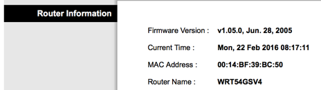
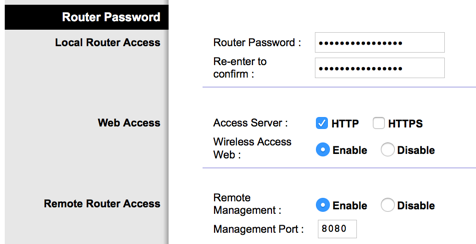

Configuring a Second Linksys Router¶
The installation of software on a D-Star gateway server requires configuring the gateway server network adapters as they will be set up at the final repeater site. The first time I went through the installation process, I reconfigured my home network to match the repeater site. This was a pain, and a process I do not want to repeat.
A better solution is to use a second router in your home network and configure the network behind that new router to match the repeater site.
My home router is an Apple Airport Extreme connected to my cable modem, and set to deliver 10.0.1.xxx IP addresses inside my home network.
I connected a Linksys WRT54G router to the Airport Extreme. The cable runs from an available LAN port on the Airport to the WAN port on the Linksys. An available LAN port on the Linksys is connected to the Primary LAN port on the gateway server. This is what the setup looks like:

Configuring the AirPort Router¶
There are two ways to set up the home network for the new router. The easiest is to let the Airport Extreme assign an IP address to the new router. The Linksys router is left in its default configuration and will get an IP address from the Airport router using DHCP. The address assigned using this scheme is generally not know in advance, but my Airport Extreme supports assigning a fixed IP address based on the MAC address of the attached device.
The second way to set things up involves assigning a static IP address on the Linksys that is outside of the range of addresses the Airport Extreme will assign through DHCP. Since my router is set up to assign IP addresses in the 10.0.1.1xx range, I chose an address of 10.0.1.204 for my setup.
Configuring the Airport Extreme¶
If you choose to let the home router assign a fixed IP address using the DHCP protocol, you need to get the MAC address from the Linksys router. To do this, you will need to access the Linksys control panel.
Hook up a laptop to the LAN side of the router and log into the administrator panel on the router. On my Linksys, the control panel status page showed this:
The Airport Extreme control panel has a controls to set the DHCP IP reservation using the MAC address. Check other routers to see if they support something similar.
Configuring Linksys for Static IP¶
To set a fixed IP address for the WAN side of the Linksys router, log into the
control panel and navigate to the Setup menu. Here is how I configured the
router:
The gateway setting matches my Airport Extreme router, which will forward traffic from the Linksys to the Internet or other machines in my home network!
To make it easier to change settings later, I also configured the Linksys router for external admin access. This opens up port 8080 on the external (WAN) IP address so you can access the router admin panel by opening a browser on a system in the home network and navigating to 10.0.1.204:8080. These settings are found on the Administration menu:
Note
You must change the default admin password on the router for this setting to be changed. I used a temporary password for testing.
Router LAN Settings¶
Next, we need to configure the router for a static LAN IP address. Access the
Setup menu. Under the Network IP settings area and set as follows:
The address of 10.0.0.1 is required for the icon software setup.
Port Forwarding¶
We will want to access the new gateway server using HTTPS and SSH protocols,
and access the router control panel. To make all of this happen, we need to set
up port forwarding on the Applications and Gaming menu:

Communicating with the Server¶
With the repeater server attached to the Linksys router on one of the LAN
ports, we will set up the en0 network adapter so it gets a static IP
address of 10.0.0.2 (required by the ICON software). Once this setup has been
done, you should be able to reach the new server using SSH to 10.0.1.204, and
access the web server using the HTTPS protocols.
With this basic hardware setup completed, we can start configuring the gateway server.